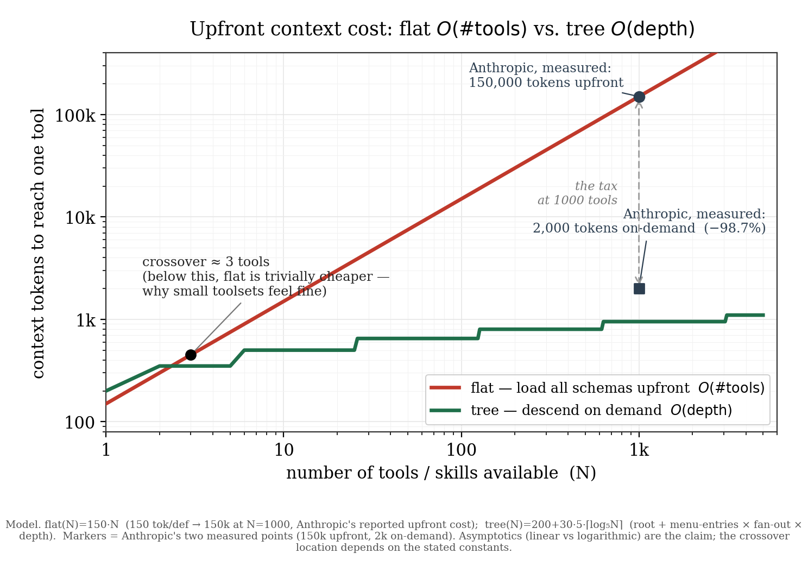

June 2026Level 3 · ContextSkills
Flat vs Tree
I wrote a paper about a bug hiding in every AI "skills" folder. The structure your agent needs is already there — the interface just ships it flat. Here's the gist, so you can talk about it without reading twelve pages.
A while back I wrote about the Progressive Disclosure Harness — the observation that AI agents get worse the more tools you give them, and that the fix is to show the agent only what it needs for the current step instead of all 300 tools at once.
That post was the hack. This is the theory. I finally wrote it up properly as a working paper — "Flat versus Tree: Why Agent Skills Need a Graph" — and it turns out the thing everyone's been calling a token-budget problem is actually a shape problem. Same bug, much deeper root.
Here's the whole thing in five sentences:
Skills are shipped flat — a folder of self-contained packages. But skills are used relationally — to apply one correctly, a model has to know how it sits among the others. That relational structure is latent: it's a fact about the skills, not about how they're stored. A flat list throws it away, so the model re-derives it on every single task. Making that structure explicit — a tree, or in general a graph — is the fix, and it's cheap.
The move everyone made
The field migrated from MCP (wire up tools, expose all their schemas) to "skills" (folders of procedural knowledge, loaded on demand), and the stated reason was tokens. Anthropic's own number: loading tools on demand cut usage from 150,000 tokens to 2,000 — a 98.7% saving. Real number. Hard to argue with.
But the token comparison is the wrong axis. Per unit, a JSON schema and a skill are about the same size — a schema is a docstring, a skill wraps comparable code. What actually changed is the loading model: every schema upfront versus a tree you descend on demand. That's O(#tools) versus O(depth). The migration didn't fix the shape. It moved a flat representation to a different flat representation.

The punchline I couldn't stop laughing at
They named the feature "progressive disclosure."
Progressive disclosure means you reveal structure as you descend into it — a tree discloses at every node, not just the root. And skills do disclose progressively inside a single skill: frontmatter, then body, then referenced files. Three levels down.
But a skill cannot cause another skill to be disclosed. There's no first-class edge from one skill to a more specific one. So at the scale where disclosure was the whole point — a library of hundreds of skills — what actually shipped is a star: one center, depth-one leaves, no descent. A set of stars with no edges between them is a flat forest.
The feature was named for the tree and shipped as a star. Progressive disclosure that can't disclose across the library it lives in isn't closed under composition — it can't apply its own principle to itself.
And this isn't one vendor's quirk anymore. The skill format went out as an open standard and got adopted across the major agent platforms. The standard nailed down the unit — the skill package — and left the graph over units unspecified. The node is standardized; the edge is not. So everyone who builds on it inherits the same missing layer, and ends up rebuilding it by hand as harness code — the exact "stop programming your agents" thing the skills move was supposed to retire.
The fix is boring, which is the point
You don't need a research breakthrough. You need the missing level: take the flat folder and make its latent tree explicit, so the agent navigates the structure instead of reassembling it from scratch every turn.
That's what skilltree does (MIT, open source). skilltree map renders a flat skills folder as a coordinate-addressed, navigable tree — 0 → 0.2 → 0.2.1 — where descending injects only the node you need. skilltree search gives you zero-dependency retrieval scoped to any subtree. The machinery is commodity. The contribution isn't an algorithm — it's handing the model the structure it can't construct for itself, at zero configuration.
One honest caveat, which is in the paper too: this is substrate-correction, not a benchmark flex. I'm not claiming trees beat flat lists on some leaderboard. I'm claiming the disciplined folder approach good engineers already reach for is approximating a graph by hand — and that you should get that graph for free, from the structure, instead of paying for it in inference and supervision every run. Expect results of that kind: the same thing you'd do carefully by hand, carried by the substrate.
Go read it (or don't)
The whole argument — the crossover model, the open-standard gap, the ICM case study where a flat folder workflow breaks the moment the human steps out, and where this all points (a graph substrate, not a folder) — is in the paper:
- Paper: Flat versus Tree: Why Agent Skills Need a Graph
- The tool: github.com/sancovp/skilltree (MIT)
But you don't have to read it to use the idea. The idea is one line: the structure is already there — stop shipping it flat.